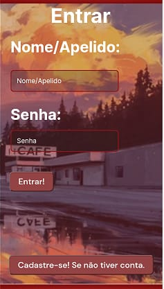
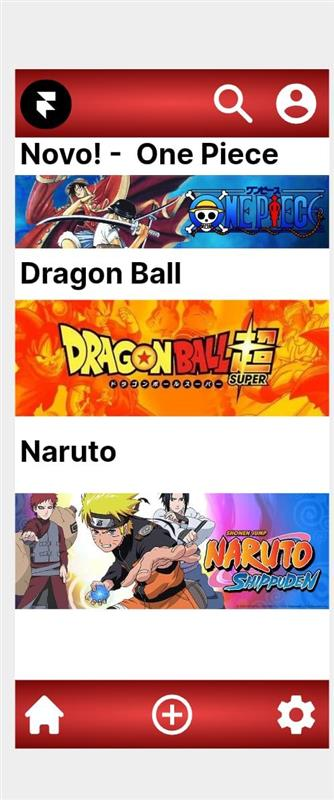

Introdução

esse produto pode ser facilmente usado, livre para todas as idades, e com funções amplas para você, ferramenta ampla também para quem quer aprender
nossa arte é desenho artistico
Temos funções simples também como cadastro, publicações,fedbacks, configurações de tema (como claro/escuro),temos sistemas de amizades para nosso cliente
(Introdução) Obras de Alunos:
Temos obras a serem pesquisadas/procuradas obras expostas, que nossos alunos concluiram (como:Dragon ball,One piece,Naruto etc...), tanto dando satisfação a você usuario que conhece essa aréa, quanto aos que não conhecem ainda, podendo conhecer informações novas, que não conheciam, (isso prende bastante a atenção do público), visto as cores fortes que inserimos como: vermelho, que logo se nota à cima da página, laranja que foi proposto a obra Dragon ball, essas diversas cores que faz a diferença para você usuario.
Justifica:
Nossa arte contem inovação onde focamos em ensinar nosso cliente como fazer sua própria arte com o esboço
________________________________________________________________________________________________________________________________________________________
Objetivo geral:
Ampliar o conhecimento sobre arte ao nosso cliente
________________________________________________________________________________________________________________________________________________________
Objetivo Especifico:
Trabalhar com esboço e finalizações de Desenho junto com Pinturas Buscar tecnicas novas (como pintar com os dedos,adicionar texturas novas, fazer luz e sombras)
_______________________________________________________________________________________________________________________________________________________
Metodologia:
ideias da nossa empresa:Briefing Design thinking é uma das metodologias criativas que permite solucionar problemas e inovar em empresas. Ela pode ser traduzida como “modo de pensamento do design”, por utilizar fundamentos do design adaptados à realidade dos negócios.
Persona Design Thinking
As personas são muito importantes no processo de Design Thinking, pois ajudam a manter o foco nos usuários e auxiliam no processo de tomada de decisão. A técnica pode ser aplicada em diversas fases de um projeto, dando suporte à criação de soluções inovadoras.
Funcionalidades:
A ideia e A ideia é que os participantes fiquem imersos, resolvendo problemas complexos de forma criativa e focada nas necessidades do mercado.
A técnica
A técnica pode ser aplicada em diversas fases de um projeto, dando suporte à criação de soluções inovadoras.
Entre as utilidades estão o alinhamento de informações dos usuários e a geração e validação de ideias. Essa técnica pode ser utilizada diversas vezes no Design Thinking para alinhar informações dos usuários com todas as pessoas envolvidas.